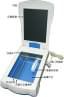
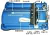
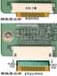
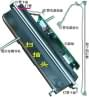
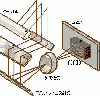

|
|
| 当前位置：电脑报电子版 > 1999 年 > 41 期 > OA专刊 > 我的世界你最懂——扫描仪结构及工作原理 |
| 《 我的世界你最懂——扫描仪结构及工作原理 》 |
| 随着扫描仪生产技术的发展和价格的下降，平台式扫描仪在办公室、家庭中逐渐普及，为了让读者进一步了解扫描仪如何将彩色图稿、照片转换为数字图形文件送入计算机，本文以图解方式讲解如何拆卸一台VIGOR扫描仪，让我们一齐“进入”扫描仪内部，认识扫描仪的内部零件，并讨论这些部件对扫描仪性能的影响。
一、原理概述 扫描仪整体为塑料外壳，由顶盖、玻璃平台和底座构成。玻璃平台用于放置被扫描图稿；塑料上盖内侧有一黑色（或白色）的胶垫，其作用是在顶盖放下时以压紧被扫描文件，当前大多数扫描仪采用了浮动顶盖，以适应扫描不同厚度的对像。如图1所示，透过扫描仪的玻璃平台，能看到安装在底座上的机械传动机构、扫描头及电路系统（电路板）。机械传动机构的功能是带动扫描头沿扫描仪纵向移动；扫描头的功能是将光信号转换为电信号；电路系统的功能是处理、传输图像。 当我们将被扫描图稿正面向下放置在玻璃平台上开始扫描时，机械传动机构带动扫描头沿扫描仪纵向移动，扫描头上光源发出的光线射向图稿，经图稿反射的光线（光信号）进入光电转换器被转换为电信号后，经电路系统处理后送入计算机。 光电转换机构沿扫描头上横向放置，机械传动机构带动扫描头沿扫描仪纵向每移动一个单位距离，光电转换机构就采集扫描图稿上一条横线上的图形数据，当扫描头沿纵向扫过原稿以后，扫描仪就采集并传输了原稿上的全部图形信息。 二、拆卸扫描仪 1．拆除玻璃平台VIGOR扫描仪的玻璃平台的四角各有一只圆孔，用十字螺丝刀伸入圆孔中拧下螺丝，即可向上取下顶盖和玻璃平台。打开扫描仪后，即可看到步进电机、传动皮带、扫描头和电路板等部件。 有些扫描仪的上下两部分不是用螺丝而是用塑料卡扣衔接，拆卸时用平口小螺丝刀插到缝隙中撬开塑料卡扣，即可分离上下两部分，撬塑料卡扣时动作要轻，不要损坏塑料件。拆开玻璃平台后扫描仪的内部结构如图2所示。 2．拔下数据软排线 VIGOR扫描仪内部有两块电路板，一块固定在扫描头后侧，另一块安装在扫描仪后侧，两块电路板通过数据软排线相连接。取下扫描头前需先取下数据软排线。数据软排线卡在电路板上的排线卡槽中，取下软排线时需先将排线卡槽两侧的卡销向外拨，而后即可很轻松的向外抽出软排线，如图3所示。 3．拆卸扫描头 扫描头穿在圆形金属杆（导轨）上，由传动皮带带动沿扫描仪纵向运动，只需将圆形金属杆从底座上的塑料卡座中取下，使扫描头脱离传动皮带，即可向上取下扫描头和圆形金属杆，而后将圆形金属杆从扫描头上抽出，如图4所示。 4．取下灯管 灯管在扫描头顶部，沿扫描头横向放置，卡在扫描头两侧的塑料卡座上，其供电电源插头插在扫描头后侧的电路板上。只需取下电路板上灯管的供电电源插头，即可从扫描头上取下灯管。最细的灯管只有火柴棍粗细，拆卸、放置时须特别小心。 5．拆除电路板 拧下两粒螺丝即可取下扫描头上的电路板，在电路板在正面你能看到双列直插封装的CCD器件。由于CCD器件需正对扫描光路中光学透镜，安装还原不当会影响扫描质量，建议一般用户不要拆下扫描头上的电路板。 三、机械传动机构 机械传动机构由步进电机、传动齿轮、传动皮带组成。扫描头由圆形支撑滑杆支撑，卡在传动皮带上，由传动皮带带动沿支撑滑杆移动，如图5所示。注意：专业级扫描仪采用精密的导螺杆移动扫描头，能获得更高的纵向扫描分辨率和更为稳定的图像。 机械传动机构步进电机的步进精度决定了扫描仪的纵向扫描精度（分辨率），由于步进电机很容易控制，大多数厂商取垂直分辨率为水平分辨率的两倍生产扫描仪。 四、扫描头 扫描头是将光信号并将其转换为电信号的组件。常见扫描头上使用的光电转换器件有CCD(Charge－Coup led Device）电荷耦合器件和CIS（Contact Image Sensor）接触式图像传感器(CIS扫描仪工作原理参见本版今年13 期OA专刊《扫描仪之眼》一文。使用CCD器件的扫描头由光源（条形灯管）、三只条形平面反射镜、聚焦透镜（透镜组）和CCD电荷耦合器件组成（如图6）。条形灯管和条形平面反射镜在扫描头上沿水平方向放置。扫描仪工作时条形灯管发出的平行光线经图稿、条形平面反射镜反射后经聚焦透镜（或透镜组）进入CCD，由CCD将光信号转换为与光强度成正比的模拟电信号。 1．光源 扫描仪通过读取反射或透射的光线来获取图像信息，光源的品质好坏将严重影响到最终扫描结果。目前的扫描仪产品基本上都使用了低压辉光放电管，低压辉光放电管无灯丝，寿命长，发光稳定，可以获得极高的扫描质量。 2．镜头 镜头的功能是将光线会聚于感光元件CCD上，以产生清晰的不失真的图像。镜头是影响图像质量的极为精密的重要光学部件。大多普及型扫描仪使用单定焦镜头获取图像，要将A4（210mm）幅面宽图形信息会聚于CCD上要求镜头有较大的张角，如镜头质量不好，扫描图像的边缘会产生像差和色散，导致图像边缘变形和色彩失真。 ·为改善图像质量，高档扫描仪使用多组镜头分别对不同区域的图形取样，以减小像差和色散，产生均匀清晰的图像。 ·有些高档扫描仪采用可调焦距镜头以适应不同面积扫描对象，在扫描较小面积的图像时，通过调焦获得较高的分辨率。 3．光电转换器件CCD 光电转换器件CCD集成有众多光敏器件芯片表面，这些光敏器件在一条直线上排列，当光线经镜头会聚成像在CCD表面上时，每个光敏器件会因感受到光强的不同而感应出不同数量的电荷，译码电路根据每一光敏器件耦合的电荷量形成与入射光强度成比例的模拟电信号（指大小连续变化的电信号）输出。 光电转换器件CCD广泛用于摄像机、数码相机和扫描仪中，摄像机和数码相机中使用是面阵CCD，可摄取平面图像，而扫描仪中使用的是线性CCD，只接收一条直线上的图像数据。 CCD只能感应到接收光线的强度，不能分辨图像的色彩。获取彩色图像有两种常用方式，一是在CCD芯片的光敏元件表面的每个像素上加彩色滤色片构成彩色成像CCD，二是用用分光系统将入射光分为红绿蓝三色光，用三片CCD分别接收。 (重庆 周新) |
| 下载本期推荐软件 | 页 首 |
| 《电脑报》版权所有，电脑报网站编辑部设计制作发布 |